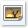

Ayuda:Tutorial (imágenes)
| Tutorial | Editar | Dando formato | Enlaces internos | Imágenes | Sitios relacionados | Enlaces externos | Págs. de discusión | Ten en cuenta | Registro | Para terminar |
En todos tus artículos puedes agregar imágenes.
Incluir una imagen en un artículo
Edita el artículo correspondiente y crea el siguiente enlace:
[[Archivo:Nombre de la imagen|Texto alternativo.]]
Puedes hacerlo con el botón  que aparece en la barra de botones que está encima de la caja de edición (aunque es posible que no aparezca en tu navegador). Selecciona el nombre del archivo y el texto alternativo —separados por una barra |— y pulsa el botón. Escribirá [[Archivo por delante y ]] por detrás.
«Nombre_de_la_imagen» es el nombre que tiene la imagen incluyendo su extensión, la cual se usa para indicar el formato de la imagen agregada (.jpg, .png, etc.).
El «Texto alternativo» debería contener una breve descripción de la imagen, o un epígrafe. Este texto se presenta en un texto flotante o si la imagen no se carga. Es también importante para las personas ciegas que usan lectores de pantalla o para los navegadores basados en texto.
Sólo falta refrescar la página correspondiente para comprobar el enlace. Recuerda respetar las mayúsculas y minúsculas en el enlace de la imagen.
Imagen en recuadro
Puedes hacer que la imagen aparezca en un recuadro, tal como se ve la imagen de la Luna a la derecha. Puedes hacerlo de la siguiente forma:
[[Archivo:Nombre de la imagen|thumb|Texto alternativo.]]
Ejemplo:
[[Archivo:Moon.jpg|thumb|Vista de la Luna.]]
También puedes hacer que aparezca a la izquierda, simplemente agregando "izquierda":
[[Archivo:Moon.jpg|thumb|izquierda|Vista de la Luna.]]
¿Dónde encuentro imágenes?
Todos los proyectos de la Fundación Wikimedia (como la Wikipedia en español) cuentan con un repositorio común de archivos multimedia (ya sea imágenes, audio y vídeo, documentos, entre otros) llamado Wikimedia Commons, o abreviado como simplemente Commons. De acuerdo con la política vigente referente al uso de imágenes y archivos multimedia, en la Wikipedia en español sólo pueden utilizarse archivos almacenados en Commons.
Allí hay una infinidad de imágenes que te pueden servir para tu artículo, además puedes agregar las que necesites. Visita su portada para hacer una búsqueda de imágenes que puedan servir a tu artículo.
¿Cómo agrego mis propias imágenes?
Si deseas incluir imágenes u otros recursos multimedia en Wikipedia, necesitarás primero subirlo a Commons para después enlazarlos en los artículos. Antes de subir archivos allí, necesitas registrarte o crear una cuenta en Commons. Si la interfaz está en inglés, puedes cambiarla al español accediendo a tus preferencias (preferences), donde verás una casilla llamada «Interface language:» donde puedes elegir, entre otros, es - Español.
Una vez registrado, usa el enlace «Subir archivo» que está en el cuadro de herramientas de la izquierda.
¿Por qué no me muestra la imagen?
En Wikipedia, no es posible mostrar imágenes de Internet enlazándolas directamente desde el sitio donde se encuentran. Si estás intentando colocar una imagen que está en algún sitio en Internet y estás intentando lo siguiente, no funcionará:
-
[https://misitio.org/imagen.jpg] -
[[https://misitio.org/imagen.jpg]]
También es posible que la imagen no se muestre si no existe o ha sido eliminada.
Recuerda que sólo podrás usar imágenes debidamente licenciadas que estén en Commons, por lo cual deberás primero subir tus imágenes allí y luego usarlas.
Más ayuda
Hay muchas otras formas avanzadas de agregar una imagen. Si quieres saber más de cómo hacerlo mira la ayuda de imágenes.
</div>als:Wikipedia:Tutorial/4